Architonic is Europe's leading platform for architectural products and materials — trusted by architects, interior designers, and specifiers for over two decades. But the brand had drifted. The platform had outgrown its identity, and the positioning no longer matched the ambition of where the product was heading.
The brief was total: new brand strategy, new visual identity, a complete product redesign, and a campaign to launch it all. The shift wasn't cosmetic — Architonic was evolving from a celebrated product database into a living workspace. From first sketch to final spec. In one place. Ideas. Specified.
The new identity centres on a bolder, more confident wordmark — stacked, compressed, unmissable. Coral red was already in Architonic's DNA; we made it the undisputed brand colour across every surface. The underscore beneath the wordmark became a structural signature: a platform, a foundation, a line to build from. The system had to work in a phone notification and on the wall of a Milanese apartment building. It does both.
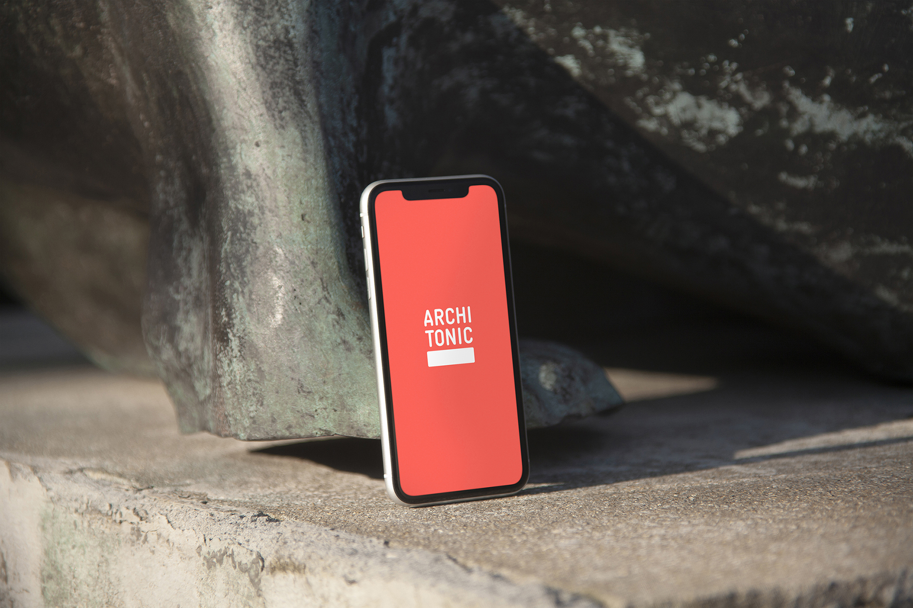
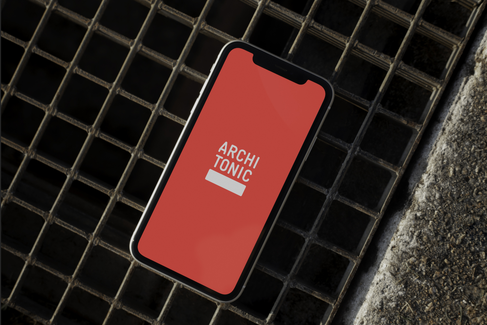
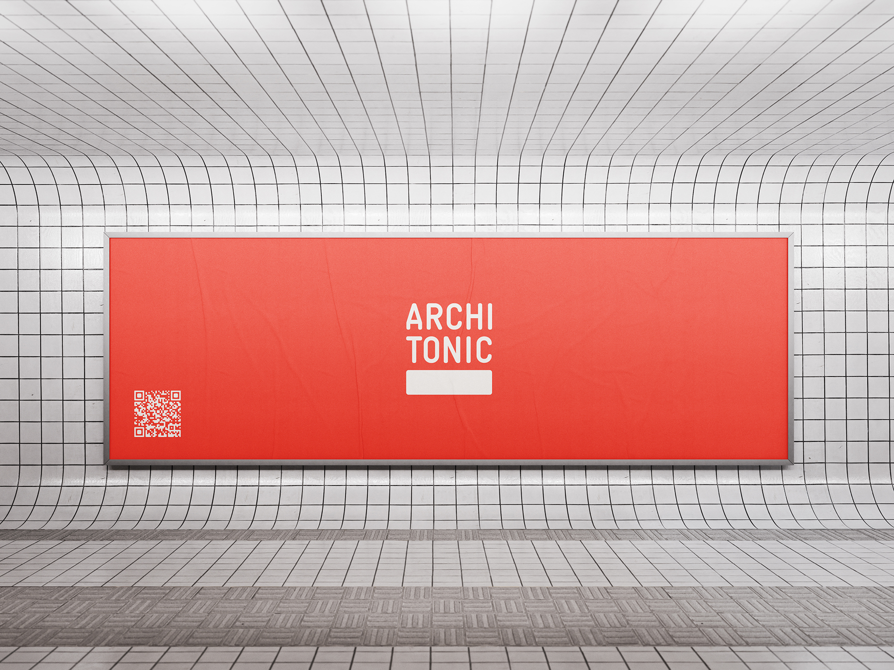
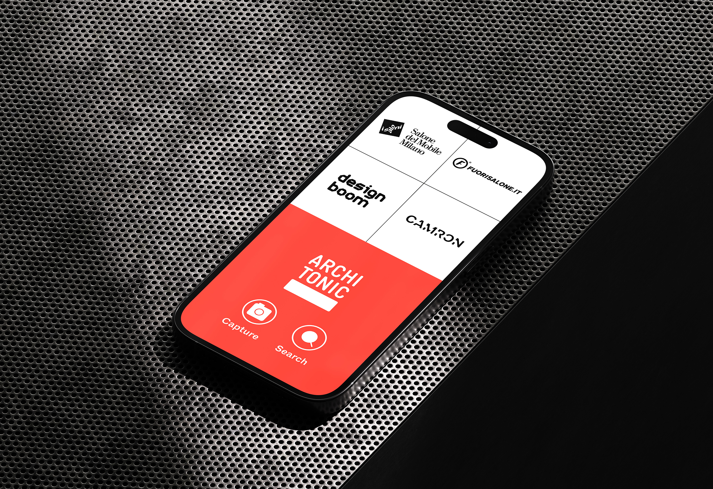
From database to living workspace. Ideas. Specified.
The product redesign started from how architects and designers actually research — by image, by material, by a half-formed idea. Smart Search with natural language. Visual Search that accepts a photo and returns the closest match. A 3D configurator for real-time material exploration. AT Studio introduced collaborative boards that replace email chains with a single interactive canvas. Live Link keeps every spec sheet current the moment a manufacturer updates it.

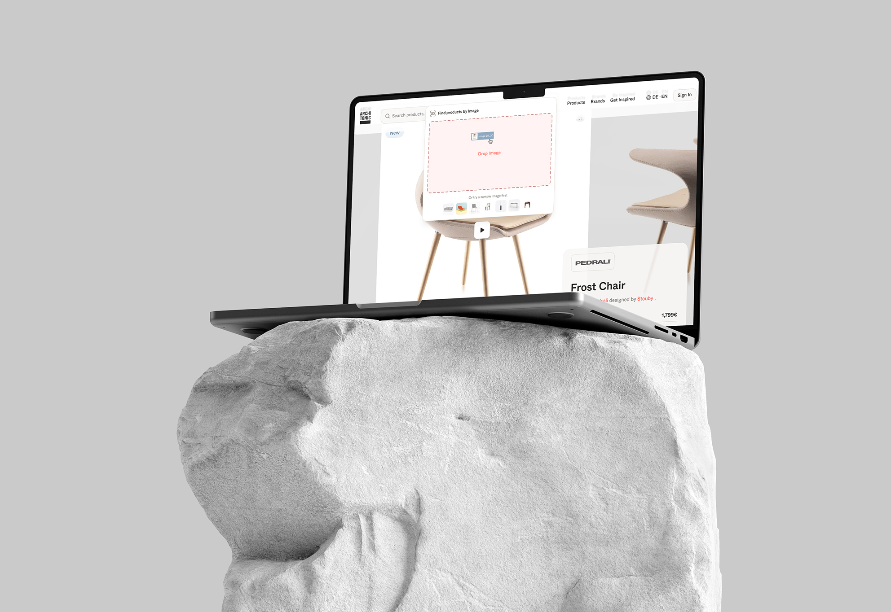
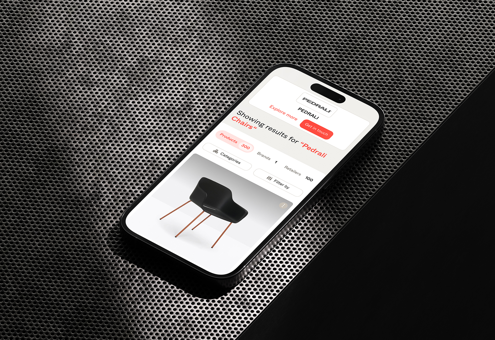
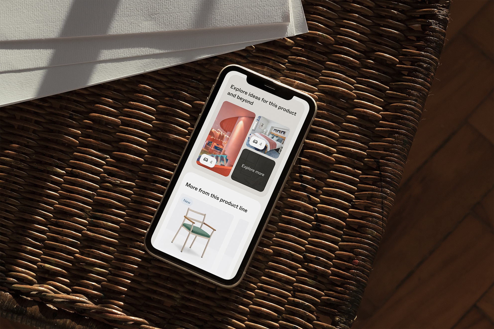
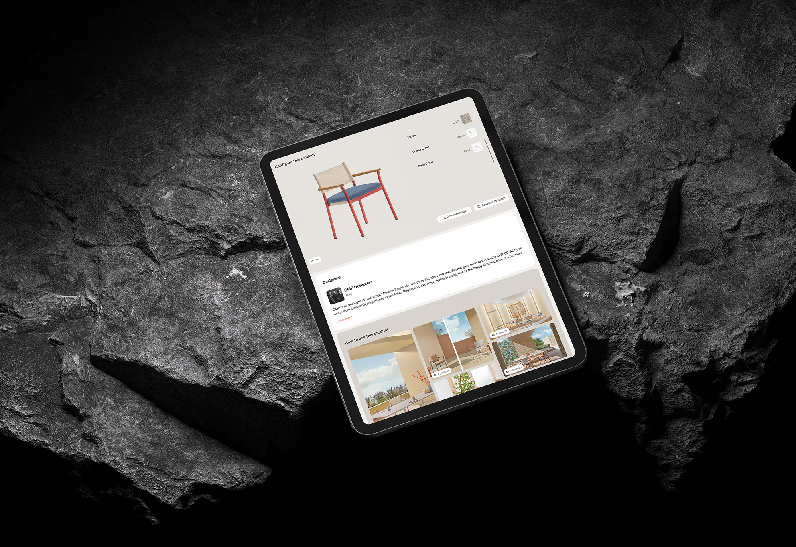

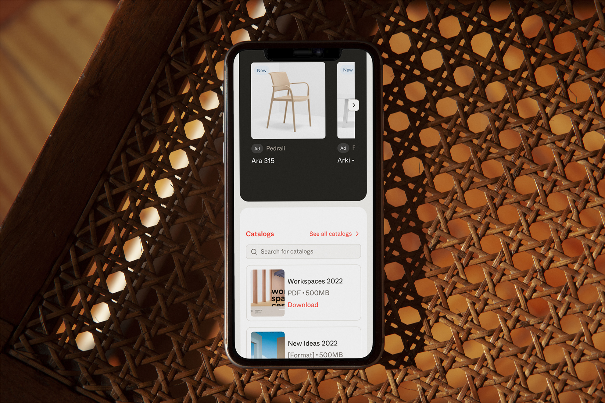
The relaunch campaign distilled the new Architonic into a single promise: a living workspace that carries an idea from the line to a fully reliable specification. Bold kinetic poster design, layered typography, and the coral palette — designed to stop you in a Milan metro corridor at 8am. The campaign ran across the Milan metro network during Salone del Mobile, digital, and trade press — reaching architects at the exact moment they were most immersed in product discovery.

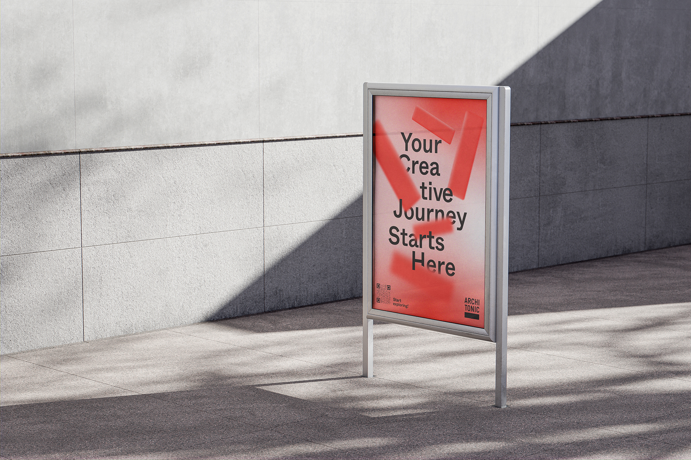
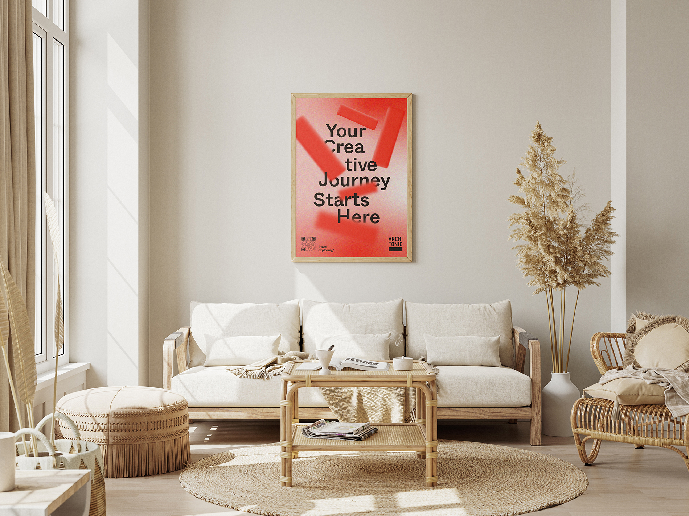


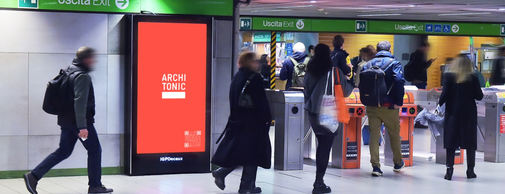

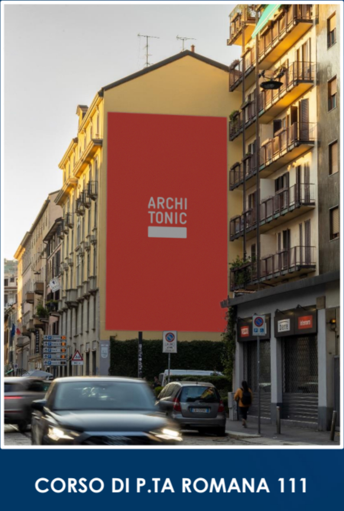
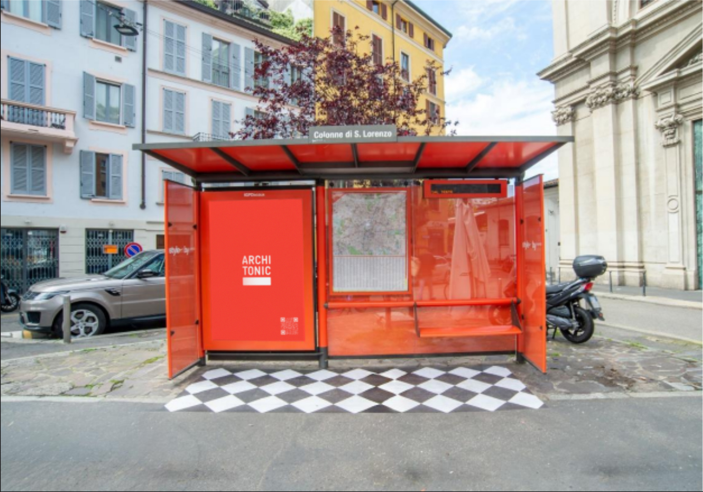
A 90-second platform film launched June 12, 2025 — site takeover, social activation, and trade press simultaneously. Five narrative chapters: Spark, Shape, Trust, Momentum, Invitation. The coral branding, four-word supers, and logo animations act as visual glue throughout.
The campaign proof layer: real architects and designers at Kinzo Berlin and OOS Zurich using Architonic in their actual workflow. Four pillars, four studios, four films — Discover. Design. Trust. Deliver.
Architonic is Europe's leading platform for architectural products and materials, trusted by architects, interior designers, and specifiers for over two decades.
We led a comprehensive rebrand across every layer of the business — brand strategy and positioning, visual identity, full platform redesign, and a global launch campaign. The strategic shift repositioned Architonic from product database to living workspace: a single environment where discovery, collaboration, and specification happen without friction.
The campaign launched at Salone del Mobile 2025, with a Milan metro takeover at Duomo station, a 90-second hero film, testimonial series with leading studios, and a full digital activation — reaching architects at the exact moment they were most immersed in product research.